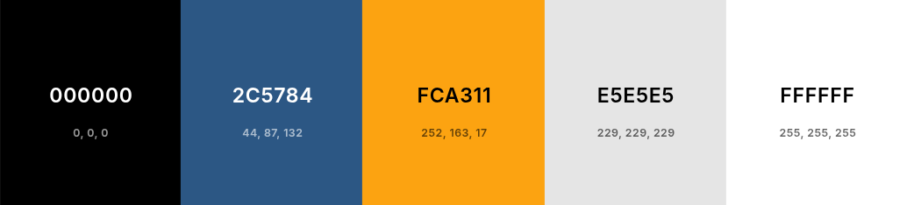

Jeremyen - Nou Sonje
This is the site name. It is a gallery of memories of life in Jeremie, Haiti, in pictures. "Nou Sonje" is the creole translation of "we remember". "Jeremyen" is how natives of Jeremie are called in creole. The website domain name might be: jeremyennousonje.com. It is available.
Site Purpose
The purpose of this site is to showcase decades of history captured through the lens of one of Jérémie’s most renowned photographers, Paul Lin Charles. It will feature photographs of familiar places and historic buildings throughout the city, portraits of notable local figures, and visual tributes to our culinary traditions.
Scenarios
- Where is Jérémie located?
- When were these photos taken?
- Are the photos organized by date or location?
- Are there descriptions or stories behind each photo?
- Who is Paul Lin Charles?
- How long has he been photographing Jérémie?
- Is Paul Lin Charles still active or available for contact?
Color Schema

- #FFFFFF : page background; over contrasting accent color.
- #000000 : general text like paragraph
- #d3d3d3: background for header, footer and in the background or shadows of some element in the body.
- #2C5784: buttons
- #FCA311 : buttons hovered
Typography
- "Playfair Display" for headings and titles.
- "Roboto" for body text.
- "Lato" for navigation menus, buttons.